In this assignment, we'll study how to perform basic (semi-automatic) theorem proving with Coq by finishing several exercises. These examples will cover basic logical connectives include implication, disjunction and conjunction. After finishing the examples, you'll do some proofs on your own, these problems will tagged with Exercise. There are some challenging problems which are tagged Challenge, which are optional.
Before starting with this assignment, make sure you've finished assignment 1 and have Coq properly installed on your computer.
CoqIde is a graphical and quite user-friendly tool for Coq. To start with, lets open CoqIde and create a file named "test.v" (note that ".v" is the default Coq file suffix). Your CoqIde main screen may looks like the figure below:
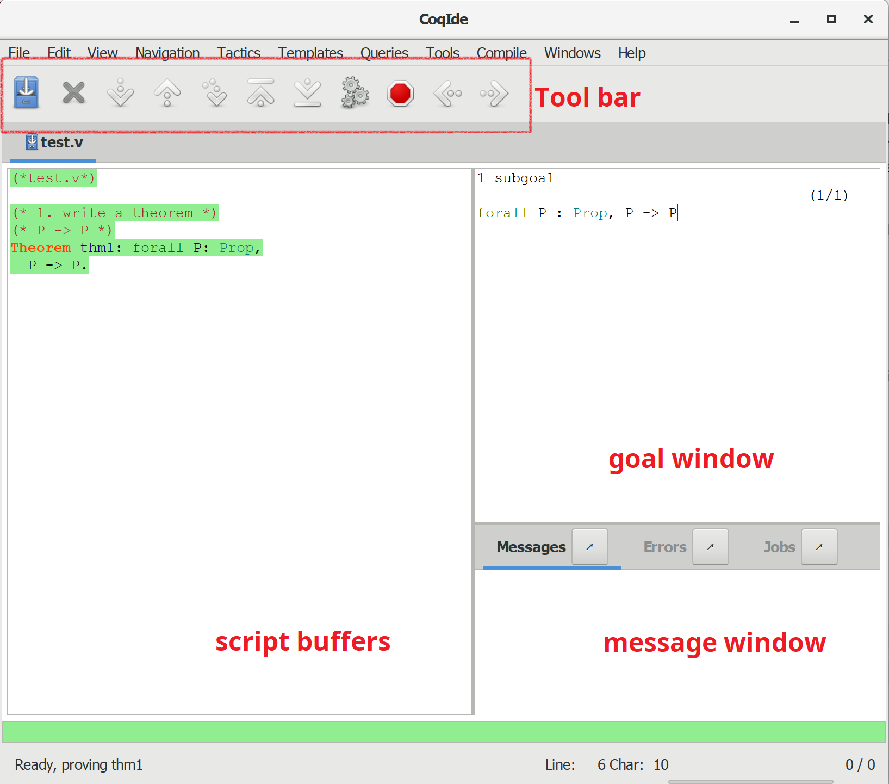There are several main windows:
When you finished the assignment, zip you code files with file name studentid-assignment1.zip (e.g SA19225111-assignment1.zip), and submit it to Postgraduate Information Platform. The deadline TBA (Beijing time). Any late submission will NOT be accepted.
In this section, let's start by learning how to do proof development with Coq. At each stage of a proof development, one has a list of goals to prove. Initially, the list consists of the theorem itself. After applying some tactics, the list of goals contains the sub-goals is generated by the tactics.
The basic structure of Coq theorem:
Theorem ident body: type.
Proof.
Tactics
Qed.
in which, some key points deserve further explanations:
In this section, we'll learn to use these tactics: intros, apply,inversion, split, right and left.
We start with a simple example with only one implication connective (->): to prove the theorem (which is an axiom) P -> P.
Example 1:
Theorem example1: forall P:Prop,
P -> P.
Proof.
intros.
apply H.
Qed.
When we step to the line 3, the goal-window will show as image below, our goal is below the horizontal line. At this time, it's same with our premises represented in assertion. And there is nothing above the horizontal line which means local context is empty, we have no premises to use. In natural deduction, the judgment is: Γ |- P -> P
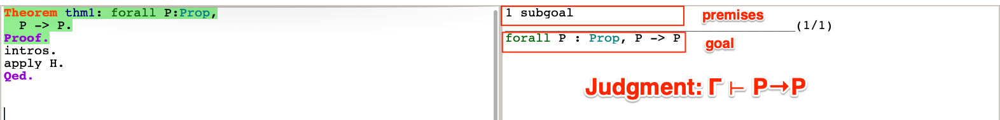Let's step forward one line, execute intros tactic. Local context will have two premises to use, as image below shows. The intros tactic have different effect base on current goal, in this example, it actually apply the Introduction Rule of Imply in natural deduction inference rules:
Γ, P |- Q --------------- (-> I) Γ |- P-> Q
You can read the online manual for more information about intros.
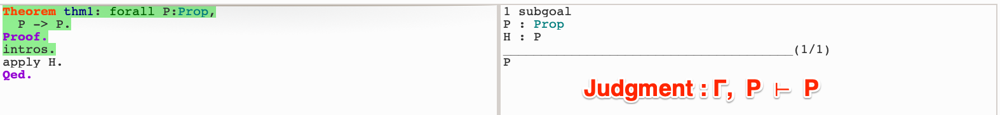Here we got a premise named "H", whose value is same with our only sub-goal. Just forward to apply H, this step will finished the proof. So, the apply tactic will be useful when you have a premise is the same as the goal. The apply tactic actually apply the Var Rule in natural deduction inference rules here:
--------------- (Var) Γ, P |- P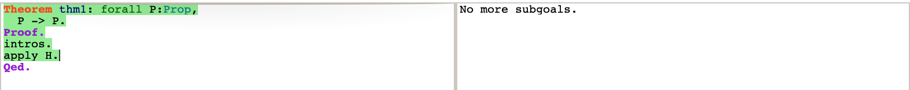
When goal-window says "No more subgoals", you can finish your proof by using Qed command, this command will let Coq save the theorem along with its proof.
P -> (Q -> P)
We continue to look at our next example:
Example 2:
Theorem example2: forall P Q: Prop,
(P -> Q) -> P -> Q.
Proof.
intros.
apply H in H0.
apply H0.
Qed.
This example presents some advanced usage of apply. After step to the line 4, we got two premises in local context, but none of them is same as our goal:
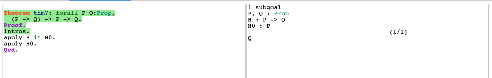If we know that x implies y and we know that x is true, we can transform x into y in our context using apply ... in ... tactic, In this example we have premise H : P -> Q , and apply it to a different premise H0: P . It will turn that premise into Q. (You can safely think this a function call, although they are different.)
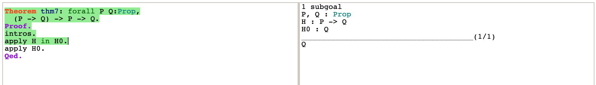
(P->Q) -> (Q->H) -> (P->H)
Here is an example to show how to prove propositions with conjunctions:
Example 3:
Theorem example3: forall P Q: Prop,
P/\Q -> Q.
Proof.
intros.
inversion H.
apply H1.
Qed.
Here we will use inversion tactic to prove theorem which has conjunction connective (/\ in Coq). After stepping to the line 4, we have a hypothesis H : P /\ Q , which has conjunction connective.
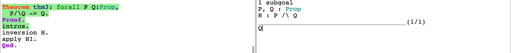We can use the inversion tactics to discover more premises from one premise in the context already. In this example, we assume that P /\ Q to be true, this can be true only if P is true and Q is also true. We use inversion to make Coq add two more premises (H0, H1) to the local context.
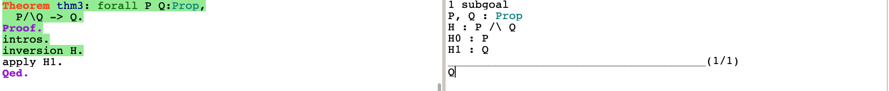
P /\ (P -> Q) -> Q
In the Example 3, we know how to handle conjunction connective in the premises. But how about conjunction connective in the goal?
Example 4:
Theorem example4: forall P Q:Prop,
(P /\ Q) -> (Q /\ P).
Proof.
intros.
inversion H.
split.
apply H1.
apply H0.
Qed.
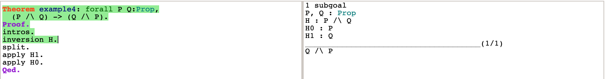
In this example. we got a goal which contains a conjunction connective /\. We can use the split tactic to split the goal into several sub-goals. Then we can prove them one by one.
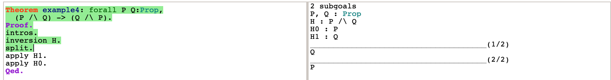The effect of the split tactic is same as the Introduction Rule of Conjunction in natural deduction inference rules:
Γ |- P Γ |- Q
-------------------------------- (/\ I)
Γ |- P /\ Q
(P /\ (Q /\ R)) -> ((P /\ Q) /\ R)
Now that we've talked about conjunction, let's move on to disjunction：
Example 5:
Theorem example5: forall P Q: Prop,
(P \/ Q) -> (Q \/ P).
Proof.
intros.
inversion H.
right.
apply H0.
left.
apply H0.
Qed.
After stepping to the line 5, the inversion tactic solve disjunction connective in context and generate two sub-goals. The two sub-goals have same conclusion but have different H0 value in local context.
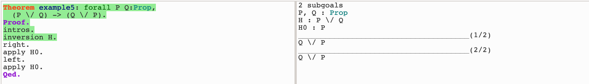In the first sub-goal, we need to prove Q \/ P under the hypothesis H0: P. As we know if we want Q \/ P to be true, we just need to prove one (or both) of them be true. So we can use right tactic to make sub-goal same with our hypothesis H0.

Do the same thing with second sub-goal by left tactic, we finish all the sub-goals.
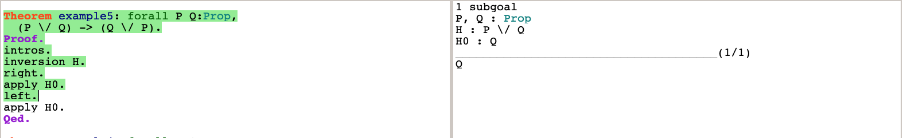The right and left tactic in Coq correspond to the Introduction Rules of Disjunction in natural deduction inference rules:
Γ |- P Γ |- Q
------------------- (\/ I1) -------------------- (\/ I2)
Γ |- P \/ Q Γ |- P \/ Q
(P \/ (Q \/ R)) -> ((P \/ Q) \/ R)
After learning the usage of these tactics, you can try to prove the following exercises.
((P -> R) /\ (Q -> R)) -> (P /\ Q -> R)
(P -> Q /\ R) -> ((P -> Q) /\ (P -> R))
Below are some challenging problems, note that all challenges are optional.
(P /\ Q -> R) <-> (P -> Q -> R)
(P -> Q) -> (~Q -> ~P)
Hint: You may need a new tactic unfold
Happy hacking!